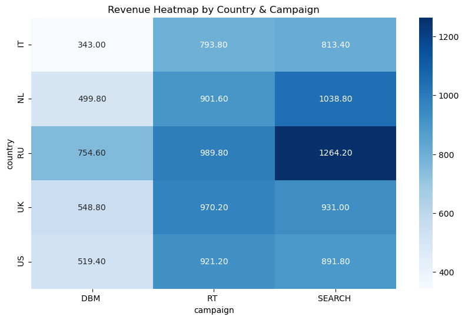
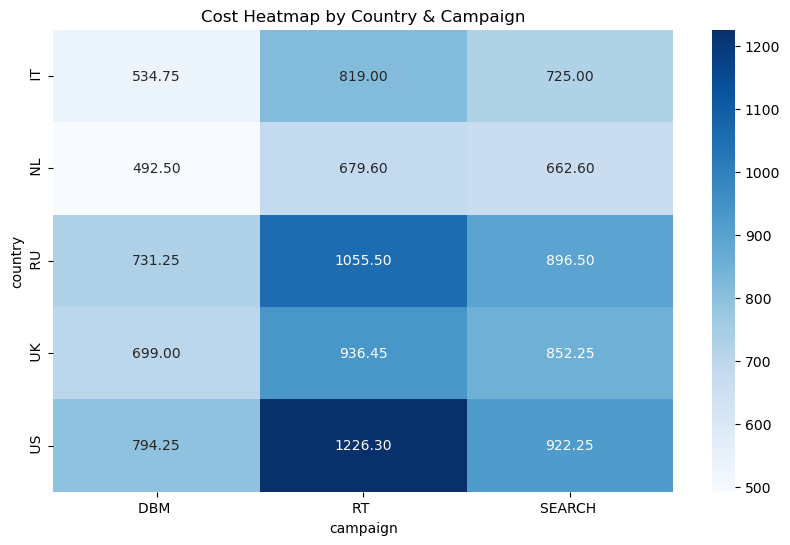
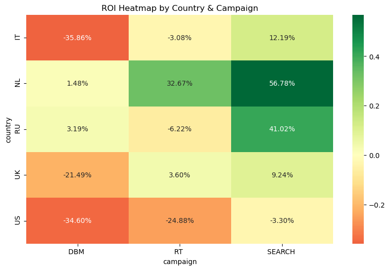

import pandas as pd
path = r"C:\Users\ASUS\Documents\lead_gen_test_task__(2)_(2)_(1).xlsx"
df = pd.read_excel(path)
df2 = pd.read_excel(path, sheet_name='sheet2')Table of Contents
Hello, and welcome to the Wrike Take Home task made by Emin Alizada.
You can simply click on the headings and move to the task results.
I have also tried to add explanations and showcase my process as thoroughly as possible.
Task 1
Results:
- ROI for Italy campaigns is: -6.18%
- ROI for US DBM campaigns is: -34.60%
Recommendations
It seems that despite high spending in the US, it is one of the most unprofitable markets, while Netherlands and Russia has better overall results.
We can see that DBMs do not drive that many conversions (the target might be inbound marketing via email or other), while search has overall best results.
Therefore, strictly from conversion POV, I would do the following:
- Shift around 30% of the budget from RT to Search.
- Suggest reducing DBM budget even further and even consider stopping it.
- Move on to country targeting.
I would prioritize countries like this:
- Netherlands - Best results so far, easy to localize content. Focus on Search and RT ads.
- Russia - Second best results, hard to localize but worth the shot. Focus on search ads.
Process overview:
- Filtering out customers in the spreadsheet
- Combining files based on the uid
- Summarizing revenue & costs
- Breaking down based on the campaign & country
- Ordering based on revenue
- Analyzing data and decision making
Images



Process - Code
Step 1: Import files
Step 2: Separate visitors, leads and customers
df_minutes = df2[df2['lead_type'] == '3_minutes']
df_customer = df2[df2['lead_type'] == 'customer']
df_lead = df2[df2['lead_type'] == 'lead']Step 3: Merge customer data to the original spreadsheet
df_merged = pd.merge(df, df_customer[['uid', 'lead_type']], on='uid', how='left')Step 4: Add format data to include $ amounts (0 for non-customer, 9.8 for customer)
import numpy as np
df_merged['lead_type'] = np.where(
df_merged['lead_type'] == 'customer',
9.8,
0
)df_merged.rename(columns={'lead_type': 'revenue'}, inplace=True)Italy ROI
df_italy = df_merged[df_merged['country'] == ' IT']
italy_rev = df_italy['revenue'].sum()
italy_cost = df_italy['cost'].sum()
italy_roi = (italy_rev - italy_cost) / italy_cost
print(f"ROI for Italy campaigns is: {italy_roi:.2%}")ROI for Italy campaigns is: -6.18%US DMB ROI
df_us_dbm = df_merged[(df_merged['country'] == ' US')]
df_us_dbm = df_us_dbm[df_us_dbm['campaign'] == 'DBM ']
us_dbm_rev = (df_us_dbm['revenue'].sum())
us_dbm_cost = (df_us_dbm['cost'].sum())
us_dbm_roi = (us_dbm_rev - us_dbm_cost) / us_dbm_cost
print(f"ROI for US DBM campaigns is: {us_dbm_roi:.2%}")ROI for US DBM campaigns is: -34.60%Step 5: Create summary sheet
summary = (
df_merged
.groupby(['country', 'campaign'], as_index=False)
.agg(
revenue=('revenue', 'sum'),
cost=('cost', 'sum'),
roi=('revenue', lambda x: None),
roas=('revenue', lambda x: None)
)
)
summary['roi'] = (summary['revenue'] - summary['cost']) / summary['cost']
summary['roas'] = summary['revenue'] / summary['cost']
summary.sort_values(by='revenue', ascending=False)| country | campaign | revenue | cost | roi | roas | |
|---|---|---|---|---|---|---|
| 8 | RU | SEARCH | 1264.2 | 896.50 | 0.410151 | 1.410151 |
| 5 | NL | SEARCH | 1038.8 | 662.60 | 0.567763 | 1.567763 |
| 7 | RU | RT | 989.8 | 1055.50 | -0.062245 | 0.937755 |
| 10 | UK | RT | 970.2 | 936.45 | 0.036040 | 1.036040 |
| 11 | UK | SEARCH | 931.0 | 852.25 | 0.092402 | 1.092402 |
| 13 | US | RT | 921.2 | 1226.30 | -0.248797 | 0.751203 |
| 4 | NL | RT | 901.6 | 679.60 | 0.326663 | 1.326663 |
| 14 | US | SEARCH | 891.8 | 922.25 | -0.033017 | 0.966983 |
| 2 | IT | SEARCH | 813.4 | 725.00 | 0.121931 | 1.121931 |
| 1 | IT | RT | 793.8 | 819.00 | -0.030769 | 0.969231 |
| 6 | RU | DBM | 754.6 | 731.25 | 0.031932 | 1.031932 |
| 9 | UK | DBM | 548.8 | 699.00 | -0.214878 | 0.785122 |
| 12 | US | DBM | 519.4 | 794.25 | -0.346050 | 0.653950 |
| 3 | NL | DBM | 499.8 | 492.50 | 0.014822 | 1.014822 |
| 0 | IT | DBM | 343.0 | 534.75 | -0.358579 | 0.641421 |
Step 6: Create heatmaps of ROI, Revenue and Cost
import seaborn as sns
import matplotlib.pyplot as plt
pivot = summary.pivot(index='country', columns='campaign', values='roi')
plt.figure(figsize=(10, 6))
sns.heatmap(pivot, annot=True, fmt=".2%", cmap='RdYlGn', center=0)
plt.title("ROI Heatmap by Country & Campaign")
plt.show()pivot = summary.pivot(index='country', columns='campaign', values='revenue')
plt.figure(figsize=(10, 6))
sns.heatmap(pivot, annot=True, fmt=".2f", cmap='Blues')
plt.title("Revenue Heatmap by Country & Campaign")
plt.show()pivot = summary.pivot(index='country', columns='campaign', values='cost')
plt.figure(figsize=(10, 6))
sns.heatmap(pivot, annot=True, fmt=".2f", cmap='Blues')
plt.title("Cost Heatmap by Country & Campaign")
plt.show()Task 2
Headlines:
- No Code Process Management
- Automate Processes - No Effort
- Low Code Business Automation
Descriptions:
- Workflow automation that replaces manual tasks | Wrike
- Save Time on Repetitive Tasks, Set Process Guardrails, & Preserve Operational Costs
- Enjoy 360° visibility, seamless collaboration, and the freedom to let work flow
Campaign setup
| Campaign | Bidding | Ad group |
|---|---|---|
| Business Automation Software - US - 13.11.2025 | Clicks==>Conversion | US - State Locations - Washington, New York, California, Texas, Florida * Exclude cities from the other ad group |
| Business Automation Software - US - 13.11.2025 | Clicks==>Conversion | US - Cities Locations - Seattle, New York, New Jersey, Los Angeles, Houston, Phoenix, Tampa, San Jose, San Diego, Denver, Dallas, Chicago, Cleveland, Minneapolis |
| Business Automation Software - US - 13.11.2025 | Clicks==>Conversion | US - Broad Locations - Broad |
Answers to questions
How do you build campaigns and what’s your approach to keyword collection, clusterization and campaign structure?
I start from the seed keyword and use Google Ads Diagnostics and then look it up on Ads transparency center, Keyword Planner and Organic Search results.
How do you generate ideas for campaigns based on the given topic and how do you implement them?
Ads transparency center is a great place to start from. If the competition is really tough I look at Trustpilot reviews to see main pain points and incorporate them into the headlines.
What’s your understanding on how campaigns should be built?
I believe campaigns should start fairly minimal and it should get updated/optimized on a daily basis. I usually treat the first 20% of the budget/time for training Google Ads’ AI model and figuring out what kind of keywords drive clicks.
In my standard process, I start with maximize click for a week or two, find out winner search impressions and locations, then make a big change and move into maximize conversions. Yes you lose a bit of steam, but it is worth it IMO.
I also tend to set up a broad ad group with no locations and all broad keyword types with 10-15% of the whole budget of the campaign, to see what Google comes up with.
We’d like to receive an explanation on each of the major steps in the campaign creation process - what’s the logic behind this, why did you decide to structure the campaign in the following way, why do you think it’s more efficient than other approaches.
In my experience there are some major locations, well known by all, in which you can get pretty good results. That’s why I always limit to top 20 cities and create an ad group for them. Then I have seen that sometimes Google suprises you, so I usually set up state wide ad groups to see which locations work best.
For keyword selection, broad keywords are generally cheaper, however the quality of results are really bad, so I use them for testing and finding new ideas. I usually reduce the budget gradually and try to limit the total ad spend to $500.
I believe in the constant experimentation and optimization philosophy, so intead of making grand strategies and dedicated plans, I try to have a minimum viable ad setup, and continually optimize it.
Keywords table
| Keyword | Avg. monthly searches | Competition (indexed value) | Top of page bid (low range) | Top of page bid (high range) | Match type |
|---|---|---|---|---|---|
| legal workflow management software | 500 | 11 | 45.58 | 91.8 | Phrase |
| project workflow software | 500 | 17 | 20.47 | 80 | Phrase |
| process workflow software | 500 | 10 | 18.42 | 78.35 | Phrase |
| workflow project management software | 500 | 22 | 9.79 | 77.8 | Phrase |
| project management workflow tools | 500 | 22 | 9.79 | 77.8 | Phrase |
| best workflow management systems | 500 | 25 | 20.59 | 67.99 | Exact |
| workflow process automation | 500 | 36 | 14.34 | 67.38 | Phrase |
| construction project management workflow | 500 | 18 | 15.6 | 59.08 | Phrase |
| construction management workflow | 500 | 22 | 7.13 | 56.8 | Phrase |
| business workflow software | 500 | 22 | 7.13 | 56.8 | Phrase |
| enterprise workflow software | 500 | 7 | 16.71 | 55.7 | Exact |
| low code process automation | 5000 | 10 | 13 | 53.73 | Broad |
| workflow optimization software | 5000 | 10 | 13 | 53.73 | Broad |
| business workflow software | 500 | 17 | 13.39 | 53.27 | Phrase |
| enterprise workflow software | 500 | 17 | 13.39 | 53.27 | Phrase |
| business workflow management software | 500 | 17 | 13.39 | 53.27 | Exact |
| business process automation tools | 500 | 16 | 16.74 | 50.54 | Exact |
| workflow automation for small business | 500 | 20 | 21.22 | 49.93 | Exact |
| business process automation software | 5000 | 3 | 16.76 | 44.43 | Exact |
| workflow and task management software | 500 | 11 | 3.15 | 43.03 | Broad |
| ai business process automation | 500 | 19 | 13.4 | 37.52 | Broad |
| construction project workflow | 500 | 31 | 5.53 | 32.94 | Broad |
| process and workflow management | 500 | 4 | 12.28 | 31.48 | Broad |
| document workflow automation | 500 | 18 | 12.95 | 27.74 | Broad |
| smartsheet workflow | 500 | 26 | 5.53 | 27.48 | Broad |
| construction workflow software | 500 | 4 | Broad | ||
| crm and workflow management | 500 | 6 | Broad | ||
| low code process automation | 500 | 5 | Phrase | ||
| it process automation software | 500 | 6 | Exact | ||
| workflow optimization software | 500 | 2 | Phrase | ||
| business process automation solutions | 500 | 2 | Broad | ||
| construction workflow management software | 500 | 4 | Exact | ||
| business process management automation | 500 | 0 | Exact | ||
| low code business process automation | 500 | 1 | Exact |
Task 3
Email:
Subject: New Cost Structure Proposal
Hi Jane,
Thank you again for sharing the details of your proposal. We appreciate the time and effort your team has put into this, and we see strong potential for a long-term partnership.
After reviewing the numbers on our side, I wanted to share a quick comparison for context. Based on our current performance:
1,000 impressions → 60 visitors → ~1.2 purchasers
Total cost based on current CPA model: ~$6.00
Effective CPM: ~$6.00
In your proposal, the CPM offered is $8.00, which is noticeably higher than what we are effectively paying today.
While CPM is a standard pricing model, it can be challenging for us to validate the value accurately, since impressions alone don’t directly reflect customer actions such as visits and purchases. This is why a CPA (cost per acquisition) model is much more transparent and stable for us. With that, we can directly measure outcomes and ensure fairness in the process.
We genuinely believe this keeps the partnership win-win, as:
you are rewarded for actual results delivered,
we retain visibility and predictability on customer acquisition costs, and
both sides remain aligned on efficiency and performance.
That said, if moving forward with a CPA model is not possible on your side, we would be open to discussing a CPM structure in the range of $4.5–5.0. This pricing band would help balance the risks on our end, especially given the fluctuations that naturally occur in CTR and conversion rates. It also ensures we can maintain sustainable performance levels while still progressing our partnership.
I’d be happy to review this together on a quick call if that works for you. We are very open to finding a model that supports both teams fairly.
Best regards,
Emin Alizada
Paid search team @ Wrike
Reasoning
We currently have 6% CTR and 2% conversion rate, meaning from 1000 impressions who saw the banner we are making at around 1.2 sales (1000 x 0.06 x 0.02). With the current CPA model we are paying $6 for this 1.2 sales, meaning our effective CPM is $6. What they offer is $8 for CPM, which is 33% increase in CPM with no guarantee in results.
In current context, $6 for CPM is the bare minimum, and ideally, having more wiggle room for the risk we are taking should be included in the proposal. Therefore I believe $4.5 for CPM is a good price we can agree upon.